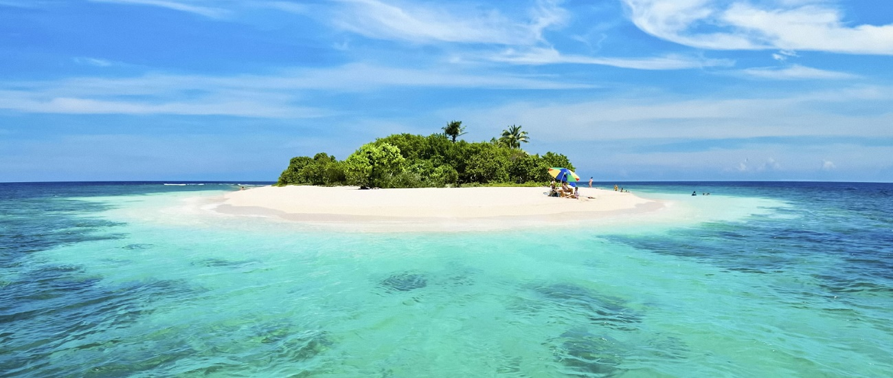

Karimun Jawa

Karimunjawa adalah kepulauan di Laut Jawa yang termasuk dalam Kabupaten Jepara, Jawa Tengah. Dengan luas daratan ±1.500 hektare dan perairan ±110.000 hektare, Karimunjawa kini dikembangkan menjadi pesona wisata Taman Laut yang mulai banyak digemari wisatawan lokal maupun mancanegara. Menurut legenda lokal, Karimunjawa ditemukan oleh Sunan Nyamplungan. Kala itu, Sunan Muria memerintahkan Amir Hasan ke sebuah pulau yang terlihat kremun-kremun (kabur) dari puncak Gunung Muria untuk mengembangkan ilmu agamanya. Karena terlihat kremun-kremun, akhirnya pulaunya dinamai "Karimunjawa" hingga kini. Amir Hasan kelak dikenal sebagai Sunan Nyamplungan karena menanam tanaman Nyamplung disana, yang ternyata bermanfaat sebagai pemecah angin.
Berbagai kegiatan khas pantai bisa anda lakukan seperti menyelam, snorkeling, memancing, berenang, atau menjelajahi laut yang jernih adalah pilihan menarik lainnya di Karimunjawa. Keunikan budaya dan tradisi penduduk lokal disana adalah objek interaksi sosial yang menarik selama kunjungan wisata Anda.
